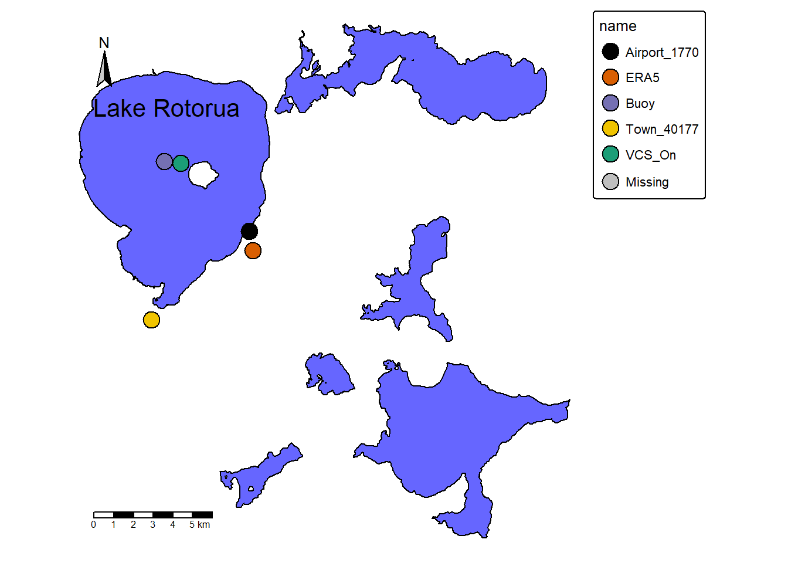
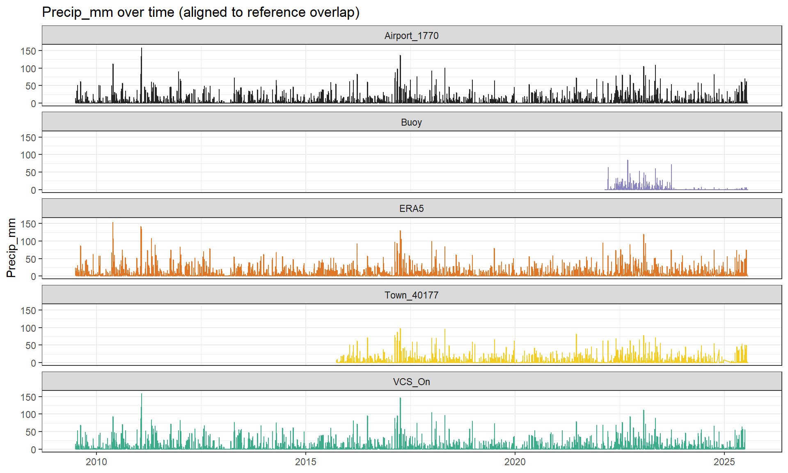
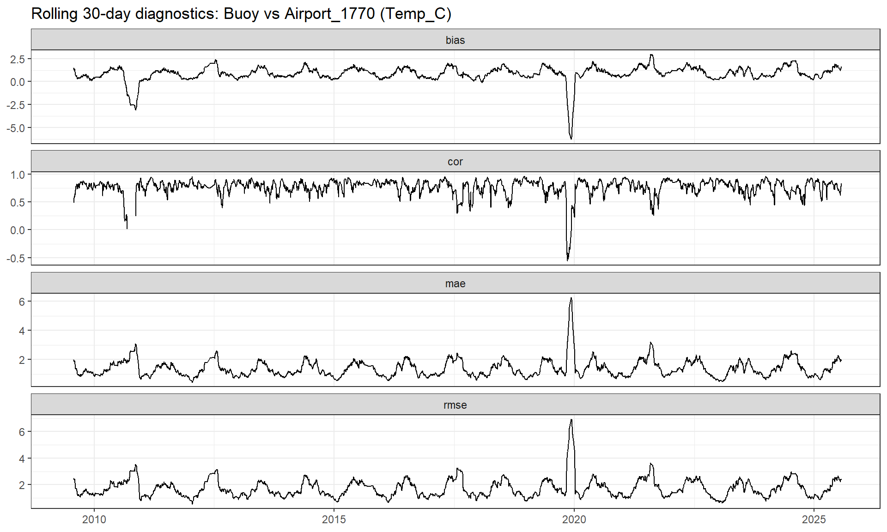
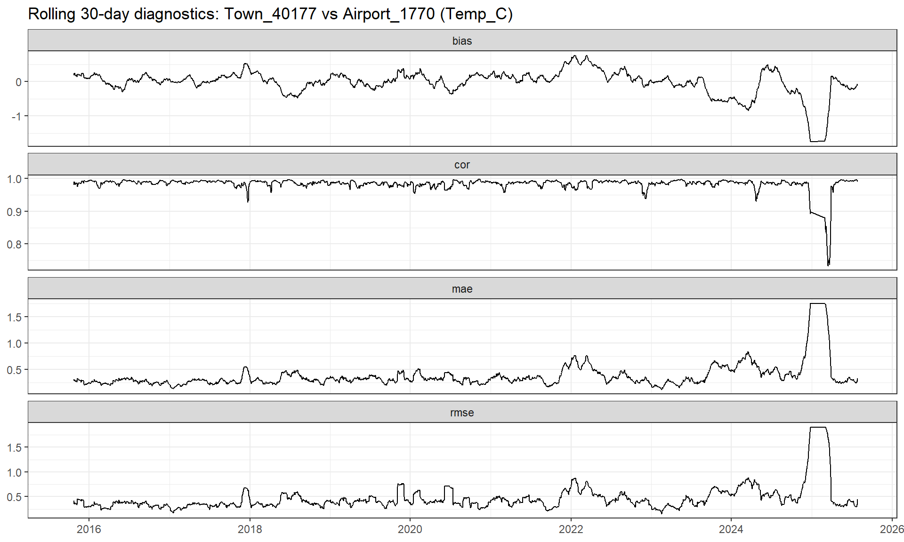

Meterological data is utalised for many different lake assesments, from understanding lake regime shifts to modeling future lake dynamices. It is therfore vital to use the best avalable meterological data for the location and time of choice. Too often meterological data are incomplete and unreliable. ERA5 (ECMWF fifth gen) data gridded at 31km is widely used due to its comprehensive and clean nature combining observations with model data, however it is coarse and some variables are known to misrepresent data at the land/lake surface (low atmosphere metorology). NIWAs virtual climate station network takes captured observational station data and created a 5km grid conecting other weather stations to allow for intergrated data in a chosen location. The VCSN data is somewhat intertwined with the Airport data which is used as the Reference for the Rotorua Lake demo. Meterological datasets in more densely populated areas or with large topographical gradients will typically result in micro-climatic datasets due to the physical nature of these environments. In partucular wind, rain and even temperature in larger cities. Additionally, stations placed in higher altitudes can often misrepresent lower altitudes. When wanting to use datasets for lake specific projects Buoy data has the opportunity to allow for more accurate readings due to its on water position. However precipitation data is often inaccurate, especially in higher wind events, causing movement of monitoring equipment. This is especially true in large lakes that can develope substantial waves. For this reason wind can also be skewed in events. Temperature for a given Lake from a Buoy is regarded the most likely accurate candidate as fulxtuations from a water body and fluxes from land follow different physical laws.
The question here is how does coarse global, modelled national, Local, and Lake source metorological data compare. Is there a better data source in cool or warm periods? or in a storm event? or for a specific variable? or Is there a better data source for local models?
By analysing the different datasets in a given location compared to a verifiable meteorological dataset we can start to see where datasets perform well and where they lack agreement.
The second largest lake (by surface area ~79.9km2) in New Zealand, Lake Rotorua is a relatively well studied lake with and round shape fitting it’s distrinct culdera description.
Although coined the second largest lake its mean depth of just 10meters results in a shallow lake clasification. Shallow lakes are particulary suseptible to climate driven shifts across short and long term scales. Shallow lakes heat up faster than deep lakes which results in larger seasonal and diurnal tempurature fluxtuations. (Frassel. et.al 2018) Shallow lakes also tend to be more suseptible to atmospheric forcing where wind, air temperature and precipitation patterms which influence water quality and consequental biology. Lake Rotorua experiance cyanobacteria blooms due to its location in the landscape (hydrothermal + Farm + Population density) recieving high nutirent content along with warmer temperatures. Additional to temperature fluxes influencing cyanobacterial fluxes, wind and rain play a role in the intensity and location of these blooms. Wind drives cyanobacterial location, often leading to cyano bloom intensification/ concentration in particular areas.
for lake Rotorua the sites selected were; Limnotrack Buoy (lat:-380550S Lon:1761653E) on lake, NIWA virtual climate station network (VCSN) grid NO:27879 lat:-38.075 lon:176.275, ERA5 statlite data for Lat:-38.114908 and Lon:176.316662, Observational data “Airport” station 1770 (lat:-38.10592 lon:176.31481), Obresvational data “Town” station 41077 (lat:-38.14635 lon:176.2578).
Study area
Code
# Note: Chage Quarto title Lat and lon to render your location of choicelibrary(leaflet)# Interactive overview map centred on the lakeleaflet() |>addTiles() |>addCircles(lng = params$lon,lat = params$lat,radius = params$buffer_km *1000,color ="dodgerblue",fillOpacity =0.25,popup = params$lake_name ) |>addCircleMarkers(lng = params$lon,lat = params$lat,radius =6,color ="navy",fillOpacity =0.9,popup = params$lake_name ) |>setView(lng = params$lon, lat = params$lat, zoom =11)
Polygon and plot
Code
library(osmdata)library(sf)library(tmap)library(rnaturalearth)library(rnaturalearthdata)library(dplyr)library(tibble) # for tribble()# Download nearby water polygons to outline the lakeoptions(timeout =10)bb <-c( params$lon -0.1, params$lat -0.1, params$lon +0.1, params$lat +0.1)osm_lake <-tryCatch(opq(bbox = bb) |>add_osm_feature(key ="natural", value ="water") |>osmdata_sf(),error =function(e) NULL)lake_poly <-NULLif (!is.null(osm_lake) &&!is.null(osm_lake$osm_multipolygons) &&nrow(osm_lake$osm_multipolygons) >0) { lake_poly <-st_make_valid(osm_lake$osm_multipolygons)}# Fallback: if no polygon returned (or OSM query failed), use the bounding boxif (is.null(lake_poly) ||nrow(lake_poly) ==0) { lake_poly <-st_polygon(list(rbind(c(bb[1], bb[2]),c(bb[3], bb[2]),c(bb[3], bb[4]),c(bb[1], bb[4]),c(bb[1], bb[2]) ))) |>st_sfc(crs =4326) |>st_as_sf()}# Change lon and lat to render your location of choice #change names to match locations# Station metadata (decimal degrees)stations <-tribble(~name, ~lon, ~lat, "Airport_1770", 176.31481, -38.10592, "ERA5", 176.316662,-38.114908, "Buoy", 176.2653, -38.0740, "Town_40177", 176.2578, -38.14635, "VCS_On", 176.275, -38.075)stations <- stations |>mutate(name =trimws(name))#Change names to match your Data set where nessesarystation_palette <-c(Airport_1770 ="black",ERA5 ="#d95f02",Buoy ="#7570b3",Town_40177 ="#f0c400",VCS_On ="#1b9e77")stations <- stations |>filter(!is.na(name), name %in%names(station_palette)) |>mutate(name =factor(name, levels =names(station_palette)))stations_sf <-st_as_sf(stations, coords =c("lon", "lat"), crs =4326)# Use combined extent of lake + stations, with a small buffer (degrees)map_extent <-st_union(lake_poly, st_geometry(stations_sf)) |>st_bbox() |>st_as_sfc() |>st_buffer(dist =0.005) # shrink/expand to tastetmap_mode("plot")tm_shape(lake_poly, bbox =st_bbox(map_extent)) +tm_fill(col ="blue", alpha =0.6) +tm_borders(col ="black") +tm_shape(stations_sf) +tm_symbols(col ="name",palette = station_palette,shape =21,size =1,border.col ="black" ) +tm_compass(type ="arrow",position =c("left", "top"),color.dark ="black",color.light ="gray80" ) +tm_scale_bar(position =c("left", "bottom")) +tm_layout(title = params$lake_name,frame =FALSE,legend.outside =TRUE,legend.title.size =0.8,legend.text.size =0.7,legend.format =list(digits =2) )

Methods
All work was completed in R code (r:alan2024?) following the script order stated on README in git reposotory (00, 01, 02, 03, 04, 05).
Please refer to methods tab for further detail
For Rotorua there seems to be no single “best” dataset, rather, there are better choices to make depending on what variable you wish to use and for what purpose. All quantitative performance statements below are relative to the Airport_1770 reference and overlap period (Table: Metrics; Table: Coverages).
NoteClick to see data coverage table
NoteClick to see metrics table
NoteClick for precipitation event structure

Distribution (variability / bias)
Scatter vs reference
NoteClick to see Scatter plot
The general strong correlation for ERA5 temperature indicates good temporal tracking most of the time (Figure: Rolling 30-day temperature diagnostics). with consistent performance rather than episodic failures shown in steady MAE/RMSE. Although ERA5 looks suitable in the case of temperature variability it should be bias corrected for absolute values with the understanding it shows a cool overall bias (Figure: Temperature Scatter) (Figure: Climatology temperature) (CITERRTN NIWA DATAHUB 6). Buoy temperatures tend to exceed airport temperatures with an overall warm bias. Two distinct short periods show large negative bias and severe error spikes, consistent with data issues or equipment errors. In fact, the historical data for this project was not quality assured and does have errors. For example, a times temperature sits at 10.5 degrees for a week. Additionally in late 2019 equipment errors occur showing a consistent 90 degrees for around two months. This temporally long 90 degree reading was redacted for better comparison in this project. This shows the unstable nature of the historical data used, which is evident in the time series data where at times the variables were not consistently recorded accurately. Outside these events, correlation is high, and errors are low, suggesting strong agreement. Overall, the Buoy temperature is reliable for most of the record, but errors should be excluded or corrected. Town station closely matches the airport on average with a near-zero bias for most of the year. Sharp shifts near the end of the series, with increase in error and reduced correlation mirroring the shifts indicate recording errors. Temporal coherence is high except during the 2025 anomaly showing high correlation. Although the Town_40177 temperature is generally consistent with the airport, recent data should be checked for change or quality issues before use suggesting stable but less tightly aligned agreement than station station comparisons. VCS_On temperatures have a consistent warm bias compared to the airport values across the record. The lack of outliers shows more a more stable nature. VCS_On can represent temperature trends rather accurately. Advise would be to bias correct and have caution around the daily scale accuracy. It is key to note the VCSN it the closest data point to the Buoy, so temperature fluctuations may be more representative of a water based temperature dynamics due to thermal buffering rather than land based. For limnological applications this is key to consider due to potential better and more accurate on lake representation.
Town wind shows a consistent negative bias. The rolling bias below zero throughout the record, indicates that the Town_40177 data underestimates wind speed relative to Airport_1770. There is generally strong temporal agreement but the short sharp drops in correlation and sharp peaks in MAE and RMSE, indicate times of poorer agreement. The overall relationship is stable but occasionally disrupted (e.g., by local site effects or data issues). Town_40177 wind is suitable for capturing wind variability trends, but absolute values should be bias corrected if used for magnitude sensitive applications. ERA5 wind-speed performance is regime dependent. It reproduces the broad seasonal cycle and event timing, but underestimates magnitude most strongly during high wind peak events, while showing smaller bias under lower winds. The seasonal oscillation in bias indicates this damping effect varies through the year, consistent with stronger mismatch during storm periods. More caution is needed if using ERA5 wind data depending on what season you look at. The oscillation bias shows a greater underestimation in some seasons (stronger =cooler, weaker = warmer). ERA5 is useful for capturing wider scale temporal patterns in wind but should be bias corrected and evaluated seasonally before use in applications sensitive to wind magnitude. ERA5 tends to smooth out local extreme weather events. VCSN wind generally shows the lowest overall wind error, resulting in more confidence performance. More specifically when using wind data for magnitude sensitive work. ERA5 is the least suitable for local day magnitude, unless corrected for ((Figure: Wind scatter; Figure Rolling wind plots; Figure Wind climatology}}}} TABSET?? For precipitation, VCS and Town are the most reliable overall, while ERA5 tends towards higher wet-day values and more false alarms. Buoy precipitation is weakest for event detection (((FIGURE: Precip scatter, precip rolling, figure event outcome, figute event skill, figure false alarm mag, figure precip climatology))}} ERA5 has the potential to be useful for wider scale projects and when needing longer records which are consistent. But for a project which require high accuracy and precision for local rain events (e.g. threshold modelling, runoff timing, loading pulses), ERA5 should be a secondary choice unless bias corrected. Project type recommendations – what do use when. When regarding seasonality or regime VCSN performs well in higher event situations (wet and windy). ERA5 temperature could be useful to use due to its clear, consistent temporal variability if needing to extend data or data gap fill, however adjustments will need to take place on an absolute level due to its cool bias. This is key to consider in lake level dynamic projects (e.g. water balance building). When it comes to Buoy and VCSN temperature recognising the spatial difference is necessary due to water/land differences. For this reason, both Buoy and VCSN temperature data are potentially better matches when it comes to lake process projects (e.g. ecological dynamics or evaporation calculations). For Climate change related projects, the ERA5 datasets completeness allows for more seamless and overarching comprehensive outcomes (CITE HERSBACH< MUNOZ< ECMWF). However, if possible, boas adjust against a local reference (e.g. Airport) data where possible.
NoteRolling diagnostics plots (Temp)
(a) ERA5 vs Airport

(b) Buoy vs Airport

(c) Town vs Airport
(d) VSCN vs Airport
Figure 1: Rolling 30‑day diagnostics for daily temp (°C) comparing data target sources (Town_40177, ERA5, VSCN and Buoy data) to the reference (Airport_1770). Panels show 30‑day moving bias (source/target − reference), Pearson correlation (cor), mean absolute error (MAE), and Root mean square error (RMSE).